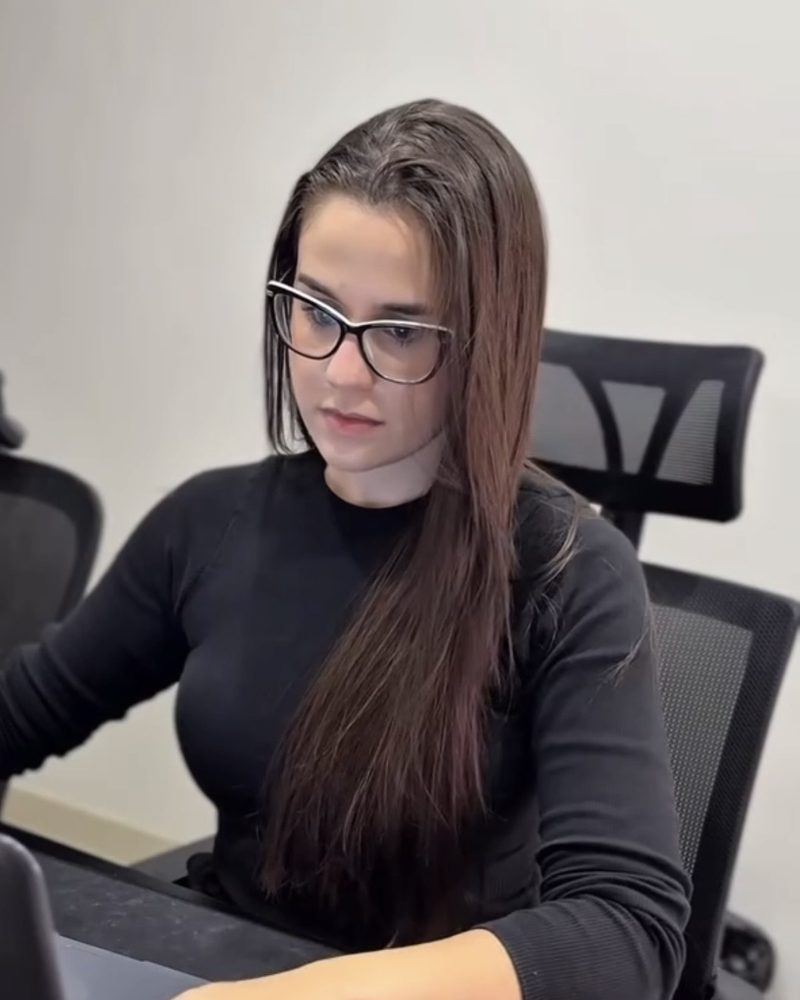

Online pelo WhatsApp, por mensagem ou áudio. Você não vai ficar sem resposta. Presencial em Caruaru, de segunda a sexta, das 9h às 18h, e em Recife, a combinar.

Campos, Melo e Andrade Advocacia. Atuação nacional, com atendimento 100% online e presencial em Caruaru e Recife.
Casos atendidos pelo escritório, identificados só pela inicial. Cada caso é único e o resultado depende sempre da análise individual e da decisão do INSS ou da Justiça.
G. ficou com sequela e o INSS não reconheceu. A sentença foi favorável e o juiz requisitou o pagamento dos atrasados, com correção, em nome dele: R$ 21.505,36 de valores em atraso mais R$ 7.442,33 de correção. E o benefício segue todo mês.
Quando o pedido entra completo e bem fundamentado, o INSS não tem o que questionar. Esta cliente chegou por indicação de outra família e teve o benefício aprovado no dia seguinte ao protocolo.
A mãe de J. L. recorreu sozinha e o caso travou. Assumimos a defesa no recurso, o Conselho de Recursos da Previdência acolheu, reimplantou o BPC e a família recebeu os atrasados de uma vez.
M. pediu direto no INSS, com a documentação médica organizada pela equipe, e em cerca de três meses o benefício foi concedido. Na Justiça, o INSS foi condenado a pagar mais de R$ 97 mil pelos anos em que ele deveria ter recebido e não recebeu.
O auxílio-doença de G. foi cortado em agosto de 2024 e o INSS ignorou a sequela. Provamos a limitação, o auxílio-acidente foi deferido e os valores contam desde a data do corte.
Filha de uma cliente antiga, não sabia que podia receber o salário-maternidade na situação dela. A equipe analisou as contribuições, fez o pedido e o INSS concedeu os quatro meses.
Valores conforme documentos oficiais dos processos. Nomes reduzidos à inicial para preservar a privacidade dos clientes.
Avaliações públicas, feitas por clientes na ficha do escritório no Google. Qualquer pessoa pode conferir.
Dezenas de famílias avaliaram o atendimento da CMA com a nota máxima.
Cada avaliação abaixo é de um cliente real, publicada por ele mesmo na ficha do Google do escritório.
"Estou muitíssimo satisfeita com o atendimento da Dra. Paula Campos e sua equipe composta por Thaynara Melo e Iago Andrade. Desde o primeiro contato, demonstrou grande competência técnica e profissional. A comunicação sempre constante e com transparência, o que me deixou muito mais segura durante o decorrer do processo. Graças à sua proatividade e dedicação, estou alcançando um bom resultado muito positivo. Sou grata a sua competência, que Deus continue abençoando a todos!"
"Muita competência, trabalho sério, eu recomendo. Inclusive vou indicar um amigo pra ser representado pelo CMA Advocacia."
"Tratado muito bem, ótimos profissionais, nota 10. Sabem tratar um cliente bem. Meus parabéns a todos."
"Uma equipe que tem bastante seriedade, respeito e compromisso com o cliente, tem o cuidado de orientar o cliente e de deixar ciente sobre todos os trâmites do processo. Além de ter uma competência jurídica inquestionável, uma postura ética e profissional. Possuem também uma linguagem de fácil entendimento até mesmo para aqueles que não possuem conhecimento no âmbito jurídico. São acessíveis e disponíveis ao cliente, o que traz uma relação de confiança."
"A minha experiência com o CMA Advocacia foi muito boa. A equipe é muito responsável, tirando nossas dúvidas. Só tenho o que agradecer pela ajuda na minha causa! Super indico a CMA Advocacia."
Quem sofreu um acidente, de qualquer tipo, e ficou com alguma limitação permanente pode ter direito a receber do INSS todo mês, mesmo trabalhando. A maioria nem sabe.
Não precisa parar. O benefício é pago junto com o salário, todo mês.
Uma vez concedido, é pago até você se aposentar. Anos de renda a mais.
Não precisa ter sido no trabalho. Moto, queda, acidente em casa ou na rua também contam.
Devido desde o dia em que o auxílio-doença acabou. Pode ser mais de um ano de valores de uma vez.
Não exige tempo mínimo de contribuição. Basta ter qualidade de segurado na data do acidente.
Não precisa estar incapacitado. Basta que a limitação exija mais esforço no mesmo trabalho.
Cada linha abre o WhatsApp com a sua dúvida já escrita. É só enviar.
Sequela de acidente de qualquer tipo, mesmo que você já tenha voltado a trabalhar.
Falar agoraAutismo, síndrome de Down, deficiência física ou intelectual. Um salário mínimo por mês para famílias de baixa renda.
Falar agoraA partir de 65 anos, mesmo sem nunca ter contribuído, quando a renda da família é baixa.
Falar agoraPor idade, tempo de contribuição, regras de transição e planejamento para se aposentar na melhor regra.
Falar agoraPara mães empregadas, desempregadas, MEI, autônomas ou rurais. Também em caso de adoção.
Falar agoraAfastado do trabalho por doença ou acidente, com pedido negado, cessado ou perícia marcada.
Falar agoraPara cônjuge, companheiro, filhos e dependentes de quem faleceu, inclusive trabalhador rural.
Falar agoraPara quem trabalhou na roça, em regime de economia familiar, mesmo sem carnê.
Falar agoraRegras mais vantajosas de idade e tempo de contribuição para quem tem deficiência.
Falar agoraConferência do CNIS, correção de vínculos e cálculo da melhor data e regra para se aposentar.
Falar agoraAções para garantir terapias, medicamentos e tratamento negados pelo plano de saúde ou pelo SUS.
Falar agoraO INSS negou, cessou ou pediu documentos que você não entende? Existem caminhos: recurso, novo pedido ou Justiça.
Falar agoraCada família é acompanhada por um advogado responsável do início ao fim. Conheça quem vai cuidar do seu caso.

Atendimento e acolhimento das famílias. É quem recebe o seu primeiro contato e acompanha você do início ao fim.

Processos administrativos e judiciais de saúde e benefícios por incapacidade.

BPC, auxílio-acidente, aposentadorias, recursos e ações contra o INSS.
Estagiárias de Direito que acompanham documentos, prazos e o contato com as famílias, e a Íris, nossa assistente jurídica, que organiza documentos, acompanha andamentos e garante que ninguém fique sem resposta. Tudo sob supervisão dos advogados.
Somos especialistas em previdenciário e saúde. Para as demais áreas, encaminhamos você a advogados parceiros de confiança, especialistas em cada assunto, e acompanhamos o primeiro contato.
Se a sua dúvida não estiver aqui, mande no WhatsApp. Respondemos por mensagem ou áudio.
Não. O primeiro contato e a análise inicial são feitos pelo WhatsApp. Você só se desloca se preferir ou quando for necessário assinar documentos. Caso contrário, todo o processo é feito online, com toda a segurança.
Pode ter. O auxílio-acidente existe justamente para quem voltou a trabalhar com alguma limitação permanente. Ele é pago junto com o salário.
Pode ter. O BPC/LOAS não exige contribuição: depende da deficiência ou da idade (65 anos ou mais) e da renda da família.
Não necessariamente. Uma negativa pode ser revista por recurso administrativo, por novo pedido com a documentação correta ou por ação na Justiça.
Depende do benefício e do caminho. Pedidos administrativos bem instruídos costumam sair em poucos meses. Processos judiciais levam mais tempo, e os valores atrasados são pagos ao final. Em todos os casos, nossa equipe faz o possível para adiantar cada etapa.
Geralmente, os honorários são pagos apenas ao final, e somente se o pedido for procedente. Se o cliente não ganhar, geralmente não deve nada ao escritório. Tudo é explicado na conversa inicial, de forma transparente e por escrito, antes de qualquer contratação.
Mande uma mensagem e escolha o melhor horário para conversar, pelo WhatsApp ou no escritório em Caruaru. Você conta a sua situação e a equipe explica, sem compromisso, quais são as possibilidades.
Agendar minha conversa pelo WhatsApp